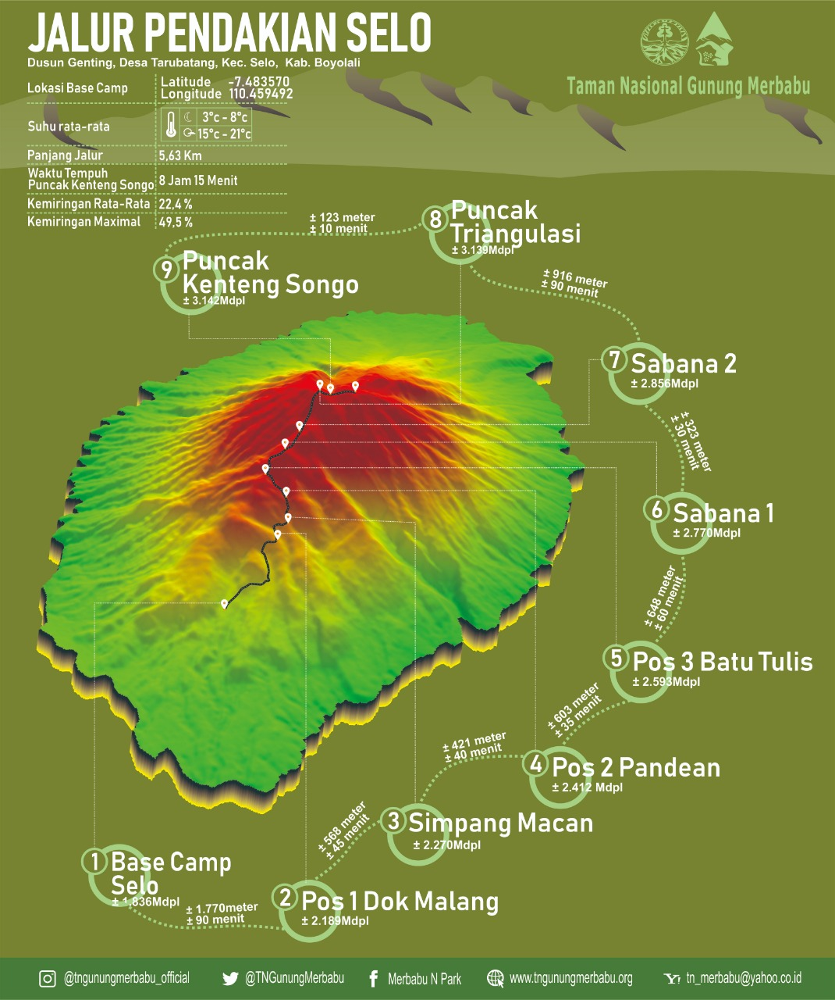

Deskripsi Umum Jalur Selo
Jalur Selo merupakan gerbang pendakian yang paling ramai dikunjungi oleh para pendaki. Terletak di Desa Tarubatang, Kecamatan Selo, Kabupaten Boyolali, jalur ini menawarkan trek yang relatif landai di awal pendakian, melintasi perkebunan warga dan hutan pinus, sebelum akhirnya terbuka menuju padang sabana yang sangat luas dan indah. Pemandangan dari sabana inilah yang menjadi daya tarik utama dan spot foto favorit di Gunung Merbabu.
Informasi Kunci
- Lokasi Basecamp: Desa Tarubatang, Selo, Boyolali.
- Tingkat Kesulitan: Pemula - Menengah.
- Estimasi Waktu Naik: 7-9 jam.
- Sumber Air: Pos 3 (terkadang kering).
- Atraksi Utama: Sabana 1 & 2, Puncak Triangulasi.
Peta Jalur
Kalkulator Estimasi Waktu
Pilih kecepatan mendaki Anda untuk mendapatkan estimasi waktu yang lebih personal.
Hasil estimasi akan muncul di sini.
Rute Pendakian (Pos ke Pos)
Perjalanan dimulai dari Basecamp Selo menuju Pos 1 (Dok Malang) yang memakan waktu sekitar 2 jam. Dari Pos 1, perjalanan dilanjutkan menuju Pos 2 (Pandean) dan Pos 3 (Watu Tulis). Setelah Pos 3, vegetasi mulai terbuka dan pendaki akan memasuki area Sabana 1, dilanjutkan ke Sabana 2, hingga akhirnya mencapai Puncak Triangulasi dan Puncak Kenteng Songo.